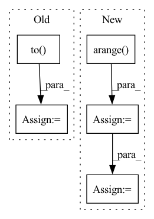

Pattern ID :2199
Before Change
edge_index_aug = dense_to_sparse(adj_aug)[0].to(self.device)
feat_aug = feat_aug.to(self.device)
label_aug = label_aug.to( self.device)
return feat_aug, edge_index_aug, label_aug
After Change
edge_index_aug = dense_to_sparse(adj_aug)[0]
inv_idx = torch.zeros(num_nodes, dtype=torch.int64)
inv_idx[node_idx] = torch.arange( batch_size)
edge_index_aug[1] = inv_idx[edge_index_aug[1]]
return feat_aug, edge_index_aug, label_aug
In pattern: SUPERPATTERN
Frequency: 3
Non-data size: 5
Instances Fragment ID: 9329359
Project Name: pygod-team/pygod
Commit Name: 586b136a6083b25183c4b6e4b86b0e0d0a4e1a0f
Time: 2023-05-11
Author: zliu234@uic.edu
File Name: pygod/detector/conad.py
M Class Name: CONAD
N Class Name: CONAD
M Method Name: _data_augmentation(2)
N Method Name: _data_augmentation(3)
M Parent Class: DeepDetector
N Parent Class: DeepDetector
M File Name: pygod/detector/conad.py
N File Name: pygod/detector/conad.py
M Start Line: 219
M End Line: 279
N Start Line: 249
N End Line: 288
Before Change
self.layer_count = layer_count
self.sample_token_count = sample_token_count
self.start_token = torch.tensor([start_token]).to(torch.long)
self.pad_token = torch.tensor([1]).to( torch.long)
self.condition_factor = torch.tensor([10]).to(torch.float)
// if torch.cuda.is_available():
// self.start_token = self.start_token.cuda()
// self.pad_token = self.pad_token.cuda()After Change
embed_count // attention_head_count
)
self.zero_prob = torch.zeros([1])
self.token_indices = torch.arange( self.sample_token_count)
self.start_token = torch.tensor([start_token]).to(torch.long)
if torch.cuda.is_available():
self.zero_prob = self.zero_prob.cuda()
self.token_indices = self.token_indices.cuda()
self.start_token = self.start_token.cuda()
Fragment ID: 9329373
Project Name: kuprel/min-dalle
Commit Name: 17c96fe110fad3d48ea591dcd46475f521499770
Time: 2022-06-28
Author: brkuprel@gmail.com
File Name: min_dalle/models/dalle_bart_decoder_torch.py
M Class Name: DalleBartDecoderTorch
N Class Name: DalleBartDecoderTorch
M Method Name: __init__(11)
N Method Name: __init__(11)
M Parent Class: nn.Module
N Parent Class: nn.Module
M File Name: min_dalle/models/dalle_bart_decoder_torch.py
N File Name: min_dalle/models/dalle_bart_decoder_torch.py
M Start Line: 127
M End Line: 129
N Start Line: 129
N End Line: 161
Before Change
emission_pred, torch.tensor([-1e-38]).to(device)) // was -float("Inf"), changed & nan errors stopped (nan from logsumexpbackward)
// create "zero_plane" for next bit:
zero_plane = torch.unsqueeze(-1e-38*torch.ones([batch_size, fb_max_length]), dim = 2).to( device)
// put "zero_plane" at beginning of the emission probabilities to be put in
// the place of the "padding" phoneme (which has the index 0)
After Change
emiss_pred_useful = torch.gather(emiss_pred_acc_lens, 2, phns_copied)
// apply mask based on phn_lens_abs
mask_phn_lens = (
torch.arange( U_max) .to(device)[None, :] < phn_lens_abs[:, None]
)
emiss_pred_useful = torch.where(
mask_phn_lens[:, None, :],
emiss_pred_useful,
torch.tensor([1e-38]).to(device), Fragment ID: 9329367
Project Name: speechbrain/speechbrain
Commit Name: cc600a8d98ce0d7f63e3ceef4dce88dbd7928a63
Time: 2020-06-01
Author: rastorge@eos18.server.mila.quebec
File Name: speechbrain/alignment/aligner.py
M Class Name: ViterbiAligner
N Class Name: ViterbiAligner
M Method Name: make_emiss_pred_useful(5)
N Method Name: make_emiss_pred_useful(5)
M Parent Class:
N Parent Class:
M File Name: speechbrain/alignment/aligner.py
N File Name: speechbrain/alignment/aligner.py
M Start Line: 104
M End Line: 123
N Start Line: 104
N End Line: 133